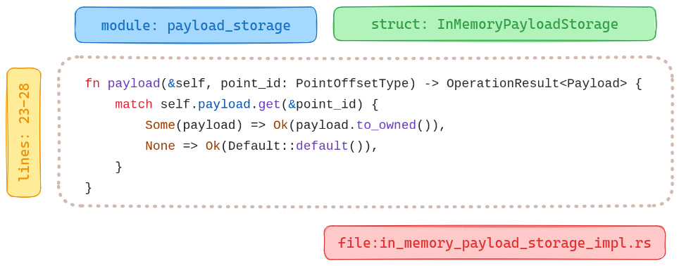
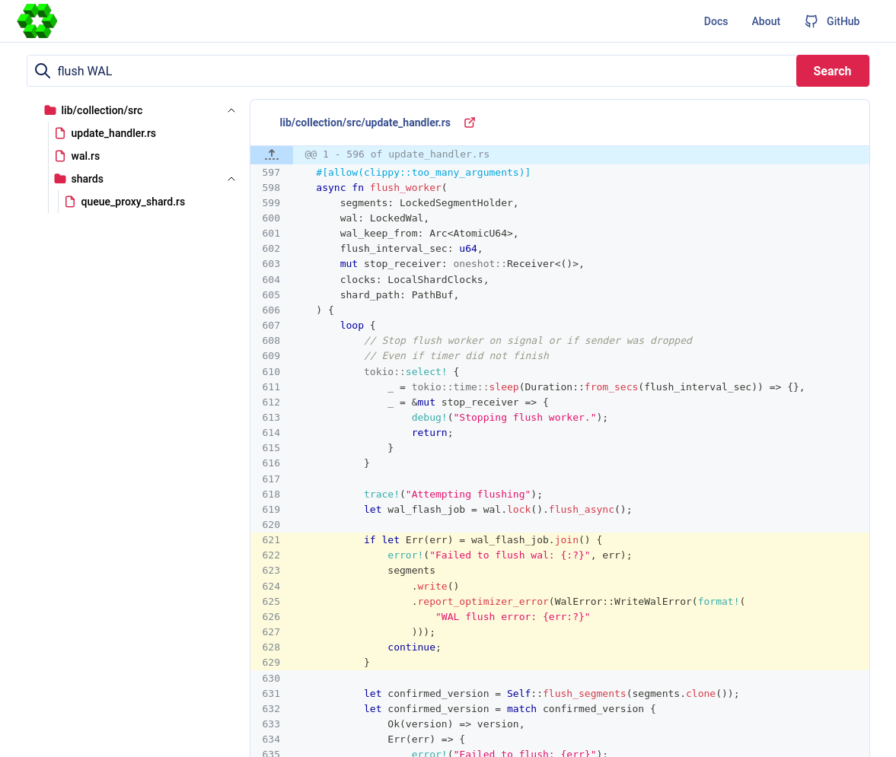

Navigate Your Codebase with Semantic Search and Solvio
| Time: 45 min | Level: Intermediate |
|---|
You too can enrich your applications with Solvio semantic search. In this tutorial, we describe how you can use Solvio to navigate a codebase, to help you find relevant code snippets. As an example, we will use the Solvio source code itself, which is mostly written in Rust.
The approach
We want to search codebases using natural semantic queries, and searching for code based on similar logic. You can set up these tasks with embeddings:
- General usage neural encoder for Natural Language Processing (NLP), in our case
sentence-transformers/all-MiniLM-L6-v2. - Specialized embeddings for code-to-code similarity search. We use the
jina-embeddings-v2-base-codemodel.
To prepare our code for all-MiniLM-L6-v2, we preprocess the code to text that
more closely resembles natural language. The Jina embeddings model supports a
variety of standard programming languages, so there is no need to preprocess the
snippets. We can use the code as is.
NLP-based search is based on function signatures, but code search may return smaller pieces, such as loops. So, if we receive a particular function signature from the NLP model and part of its implementation from the code model, we merge the results and highlight the overlap.
Data preparation
Chunking the application sources into smaller parts is a non-trivial task. In general, functions, class methods, structs, enums, and all the other language-specific constructs are good candidates for chunks. They are big enough to contain some meaningful information, but small enough to be processed by embedding models with a limited context window. You can also use docstrings, comments, and other metadata can be used to enrich the chunks with additional information.

Parsing the codebase
While our example uses Rust, you can use our approach with any other language. You can parse code with a Language Server Protocol (LSP) compatible tool. You can use an LSP to build a graph of the codebase, and then extract chunks. We did our work with the rust-analyzer. We exported the parsed codebase into the LSIF format, a standard for code intelligence data. Next, we used the LSIF data to navigate the codebase and extract the chunks. For details, see our code search demo.
We then exported the chunks into JSON documents with not only the code itself,
but also context with the location of the code in the project. For example, see
the description of the await_ready_for_timeout function from the IsReady
struct in the common module:
{
"name":"await_ready_for_timeout",
"signature":"fn await_ready_for_timeout (& self , timeout : Duration) -> bool",
"code_type":"Function",
"docstring":"= \" Return `true` if ready, `false` if timed out.\"",
"line":44,
"line_from":43,
"line_to":51,
"context":{
"module":"common",
"file_path":"lib/collection/src/common/is_ready.rs",
"file_name":"is_ready.rs",
"struct_name":"IsReady",
"snippet":" /// Return `true` if ready, `false` if timed out.\n pub fn await_ready_for_timeout(&self, timeout: Duration) -> bool {\n let mut is_ready = self.value.lock();\n if !*is_ready {\n !self.condvar.wait_for(&mut is_ready, timeout).timed_out()\n } else {\n true\n }\n }\n"
}
}
You can examine the Solvio structures, parsed in JSON, in the structures.jsonl
file
in our Google Cloud Storage bucket. Download it and use it as a source of data for our code search.
wget https://storage.googleapis.com/tutorial-attachments/code-search/structures.jsonl
Next, load the file and parse the lines into a list of dictionaries:
import json
structures = []
with open("structures.jsonl", "r") as fp:
for i, row in enumerate(fp):
entry = json.loads(row)
structures.append(entry)
Code to natural language conversion
Each programming language has its own syntax which is not a part of the natural language. Thus, a general-purpose model probably does not understand the code as is. We can, however, normalize the data by removing code specifics and including additional context, such as module, class, function, and file name. We took the following steps:
- Extract the signature of the function, method, or other code construct.
- Divide camel case and snake case names into separate words.
- Take the docstring, comments, and other important metadata.
- Build a sentence from the extracted data using a predefined template.
- Remove the special characters and replace them with spaces.
As input, expect dictionaries with the same structure. Define a textify
function to do the conversion. We’ll use an inflection library to convert
with different naming conventions.
pip install inflection
Once all dependencies are installed, we define the textify function:
import inflection
import re
from typing import Dict, Any
def textify(chunk: Dict[str, Any]) -> str:
# Get rid of all the camel case / snake case
# - inflection.underscore changes the camel case to snake case
# - inflection.humanize converts the snake case to human readable form
name = inflection.humanize(inflection.underscore(chunk["name"]))
signature = inflection.humanize(inflection.underscore(chunk["signature"]))
# Check if docstring is provided
docstring = ""
if chunk["docstring"]:
docstring = f"that does {chunk['docstring']} "
# Extract the location of that snippet of code
context = (
f"module {chunk['context']['module']} "
f"file {chunk['context']['file_name']}"
)
if chunk["context"]["struct_name"]:
struct_name = inflection.humanize(
inflection.underscore(chunk["context"]["struct_name"])
)
context = f"defined in struct {struct_name} {context}"
# Combine all the bits and pieces together
text_representation = (
f"{chunk['code_type']} {name} "
f"{docstring}"
f"defined as {signature} "
f"{context}"
)
# Remove any special characters and concatenate the tokens
tokens = re.split(r"\W", text_representation)
tokens = filter(lambda x: x, tokens)
return " ".join(tokens)
Now we can use textify to convert all chunks into text representations:
text_representations = list(map(textify, structures))
This is how the await_ready_for_timeout function description appears:
Function Await ready for timeout that does Return true if ready false if timed out defined as Fn await ready for timeout self timeout duration bool defined in struct Is ready module common file is_ready rs
Ingestion pipeline
Next, we’ll build a pipeline for vectorizing the data and set up a semantic search mechanism for both embedding models.
Building Solvio collection
We use the solvio-client library with the fastembed extra to interact with the Solvio server and generate vector embeddings locally. Let’s install it:
pip install "solvio-client[fastembed]"
Of course, we need a running Solvio server for vector search. If you need one, you can use a local Docker container or deploy it using the Solvio Cloud. You can use either to follow this tutorial. Configure the connection parameters:
QDRANT_URL = "https://my-cluster.cloud.solvio.io:6333" # http://localhost:6333 for local instance
QDRANT_API_KEY = "THIS_IS_YOUR_API_KEY" # None for local instance
Then use the library to create a collection:
from solvio_client import SolvioClient, models
client = SolvioClient(QDRANT_URL, api_key=QDRANT_API_KEY)
client.create_collection(
"solvio-sources",
vectors_config={
"text": models.VectorParams(
size=client.get_embedding_size(
model_name="sentence-transformers/all-MiniLM-L6-v2"
),
distance=models.Distance.COSINE,
),
"code": models.VectorParams(
size=client.get_embedding_size(
model_name="jinaai/jina-embeddings-v2-base-code"
),
distance=models.Distance.COSINE,
),
},
)
Our newly created collection is ready to accept the data. Let’s upload the embeddings:
import uuid
# Extract the code snippets from the structures to a separate list
code_snippets = [
structure["context"]["snippet"] for structure in structures
]
points = [
models.PointStruct(
id=uuid.uuid4().hex,
vector={
"text": models.Document(
text=text, model="sentence-transformers/all-MiniLM-L6-v2"
),
"code": models.Document(
text=code, model="jinaai/jina-embeddings-v2-base-code"
),
},
payload=structure,
)
for text, code, structure in zip(text_representations, code_snippets, structures)
]
# Note: This might take a while since inference happens implicitly.
# Parallel processing can help.
# But too many processes may trigger swap memory and hurt performance.
client.upload_points("solvio-sources", points=points, batch_size=64)
Internally, solvio-client uses FastEmbed to implicitly convert our documents into their vector representations.
The uploaded points are immediately available for search. Next, query the
collection to find relevant code snippets.
Querying the codebase
We use one of the models to search the collection. Start with text embeddings. Run the following query “How do I count points in a collection?”. Review the results.
query = "How do I count points in a collection?"
hits = client.query_points(
"solvio-sources",
query=models.Document(text=query, model="sentence-transformers/all-MiniLM-L6-v2"),
using="text",
limit=5,
).points
Now, review the results. The following table lists the module, the file name and score. Each line includes a link to the signature, as a code block from the file.
| module | file_name | score | signature |
|---|---|---|---|
| toc | point_ops.rs | 0.59448624 | pub async fn count |
| operations | types.rs | 0.5493385 | pub struct CountRequestInternal |
| collection_manager | segments_updater.rs | 0.5121002 | pub(crate) fn upsert_points<'a, T> |
| collection | point_ops.rs | 0.5063539 | pub async fn count |
| map_index | mod.rs | 0.49973983 | fn get_points_with_value_count<Q> |
It seems we were able to find some relevant code structures. Let’s try the same with the code embeddings:
hits = client.query_points(
"solvio-sources",
query=models.Document(text=query, model="jinaai/jina-embeddings-v2-base-code"),
using="code",
limit=5,
).points
Output:
| module | file_name | score | signature |
|---|---|---|---|
| field_index | geo_index.rs | 0.73278356 | fn count_indexed_points |
| numeric_index | mod.rs | 0.7254976 | fn count_indexed_points |
| map_index | mod.rs | 0.7124739 | fn count_indexed_points |
| map_index | mod.rs | 0.7124739 | fn count_indexed_points |
| fixtures | payload_context_fixture.rs | 0.706204 | fn total_point_count |
While the scores retrieved by different models are not comparable, but we can see that the results are different. Code and text embeddings can capture different aspects of the codebase. We can use both models to query the collection and then combine the results to get the most relevant code snippets, from a single batch request.
responses = client.query_batch_points(
collection_name="solvio-sources",
requests=[
models.QueryRequest(
query=models.Document(
text=query, model="sentence-transformers/all-MiniLM-L6-v2"
),
using="text",
with_payload=True,
limit=5,
),
models.QueryRequest(
query=models.Document(
text=query, model="jinaai/jina-embeddings-v2-base-code"
),
using="code",
with_payload=True,
limit=5,
),
],
)
results = [response.points for response in responses]
Output:
| module | file_name | score | signature |
|---|---|---|---|
| toc | point_ops.rs | 0.59448624 | pub async fn count |
| operations | types.rs | 0.5493385 | pub struct CountRequestInternal |
| collection_manager | segments_updater.rs | 0.5121002 | pub(crate) fn upsert_points<'a, T> |
| collection | point_ops.rs | 0.5063539 | pub async fn count |
| map_index | mod.rs | 0.49973983 | fn get_points_with_value_count<Q> |
| field_index | geo_index.rs | 0.73278356 | fn count_indexed_points |
| numeric_index | mod.rs | 0.7254976 | fn count_indexed_points |
| map_index | mod.rs | 0.7124739 | fn count_indexed_points |
| map_index | mod.rs | 0.7124739 | fn count_indexed_points |
| fixtures | payload_context_fixture.rs | 0.706204 | fn total_point_count |
This is one example of how you can use different models and combine the results. In a real-world scenario, you might run some reranking and deduplication, as well as additional processing of the results.
Code search demo
Our Code search demo uses the following process:
- The user sends a query.
- Both models vectorize that query simultaneously. We get two different vectors.
- Both vectors are used in parallel to find relevant snippets. We expect 5 examples from the NLP search and 20 examples from the code search.
- Once we retrieve results for both vectors, we merge them in one of the
following scenarios:
- If both methods return different results, we prefer the results from the general usage model (NLP).
- If there is an overlap between the search results, we merge overlapping snippets.
In the screenshot, we search for flush of wal. The result
shows relevant code, merged from both models. Note the highlighted
code in lines 621-629. It’s where both models agree.

Now you see semantic code intelligence, in action.
Grouping the results
You can improve the search results, by grouping them by payload properties.
In our case, we can group the results by the module. If we use code embeddings,
we can see multiple results from the map_index module. Let’s group the
results and assume a single result per module:
results = client.query_points_groups(
collection_name="solvio-sources",
using="code",
query=models.Document(text=query, model="jinaai/jina-embeddings-v2-base-code"),
group_by="context.module",
limit=5,
group_size=1,
)
Output:
| module | file_name | score | signature |
|---|---|---|---|
| field_index | geo_index.rs | 0.73278356 | fn count_indexed_points |
| numeric_index | mod.rs | 0.7254976 | fn count_indexed_points |
| map_index | mod.rs | 0.7124739 | fn count_indexed_points |
| fixtures | payload_context_fixture.rs | 0.706204 | fn total_point_count |
| hnsw_index | graph_links.rs | 0.6998417 | fn num_points |
With the grouping feature, we get more diverse results.
Summary
This tutorial demonstrates how to use Solvio to navigate a codebase. For an end-to-end implementation, review the code search notebook and the code-search-demo. You can also check out a running version of the code search demo which exposes Solvio codebase for search with a web interface.